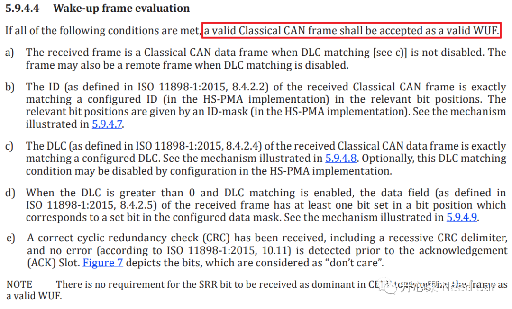
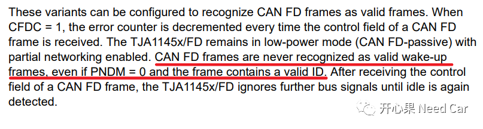
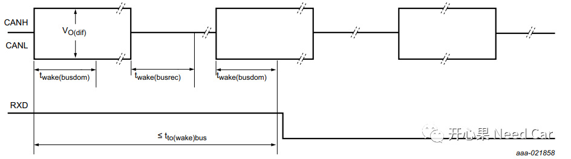
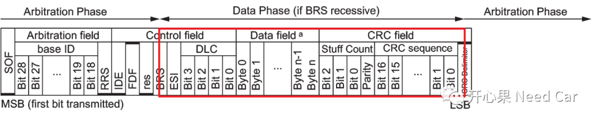

如标题问题，你能给出具体答案吗？这个问题源于Autosar群内小伙伴的讨论，先说一下我的答案：不能。这有点打脸我之前的说法，先给读者说声抱歉。本文就这个问题，深入讨论一下。
11898-2规定：Transceiver识别有效WUF(wake-up frame)时，首先要识别该CAN Frame是否是Classical CAN Frame，也就是说：Transceiver接收到CAN FD Frame，不能作为有效的WUF。有效WUF检查的condition如下所示：

TJA1145手册中，在描述CAN FD的部分也明确说明CAN FD帧不能作为有效的唤醒帧。意思就是说：即使收到CAN FD类型的网络管理报文也不能唤醒网络，会被忽略，如下所示：

1、Standard Wake-up Pattern
Standard Wake-up Pattern唤醒时序如下所示：

2、WUF，Partial Networking使能
此种方式需要Transceiver支持partial networking功能，即：只能特定的报文触发唤醒，比如：目前使用率比较高的1145。
这需要ECU在断电前，设置好1145的PN唤醒功能，即：设定可以唤醒的网络管理报文。这也是目前使用1145常用的做法，不然买1145干啥呢？
网络管理部分，在实际的项目中，大家是否遇到过网络管理报文是CAN FD类型的？目前，我没有碰到过网络管理报文类型要求是CAN FD类型。即使网段内有的节点使用普通Transceiver（比如：1043），有的节点使用支持CAN FD的Transceiver（比如：1145），但是，唤醒网络的报文类型还是会要求是Classical CAN帧。因为支持CAN FD类型的Transceiver向后兼容，所以混用没有太大问题。
CAN FD速率切换位置
这里给大家补充一点细节：CAN FD报文中，速率切换位置和各个域（field）对应位置。假设：项目中使用CAN FD的速率是500Kbps~2Mbps。真正2M速率开始切换的位置是从BRS Bit到CRC Delimiter Bit。由下图可以看出，2Mbps的速率不仅仅在Data field，CRC filed和Control field也有2Mbps的bit。
下图中标识Arbitration Phase的位置使用500Kbps，标识Data Phase的位置使用2Mbps。所以，不要混淆Data Phase和Data Field。

写在最后
写公众号的日子，遇到很多技术很棒的读者，他们给我指正、交流，受益颇多，感谢！有需要的朋友，可以进群聊，群里有很多专业的小伙伴可以答你所惑！

参考资料
SIMPLE TITLE
ISO 11898-1-2015.pdf
TJA1145 High-speed CAN transceiver for partial networking.pdf
往期精彩回顾